NCPA: the contract for buying a brand-new home from the builder
C.A.R. Form NCPA (Revised 6/26) is the purchase contract for a home that is being built or just finished, bought straight from the builder. 19 pages of contract plus advisories. Here is every paragraph that matters, and how it differs from a normal RPA.
The 10-year-old version
Buying a used house is like buying a bike that is already in the shop window. You can see it, test it, and take it home next month. Buying new construction is like ordering a custom bike that the factory has not finished yet. You pick the color, you pay a deposit, and you wait. The NCPA is the order form. It says what happens if the factory is late, what happens to your money while you wait, what you can change, and who fixes it if a wheel squeaks after you ride it home.
Example: Anh Minh (buyer) signs an NCPA for Lot 12, Plan 3 at 1234 Example Lane, San Jose, CA 95100. The house is still framing. He puts $40,500 in escrow, picks $25,000 of upgrades, and the builder says it should be done in June. No one can promise the exact closing date yet. The contract handles that.
Who signs it, when to use it, when not to
Who signs
The buyer and the seller (the builder or developer). The agents sign the broker section. Escrow signs the escrow acknowledgment.
Use it when
You buy a home that is under construction or newly finished, straight from the builder: a new subdivision, a small infill project, a new house on a lot, a new condo.
Do NOT use it
For a resale home (use the RPA, T401). For a manufactured home from a dealer (dealer addendum MHDA). For vacant land only. When the builder hands you its own contract (big builders usually do, and then you read theirs, not this one). For a contract to build on land you already own (that is a construction contract).
Comes with
In this 27-page packet: the agency disclosure AD (2 pages), the NCPA (19 pages), then FHDA, BHIA, WFA and BIA advisories. Often added: NCOU (options and upgrades), NCEI (escrow instructions for a condo/HOA project), a copy of SB 800 (Civil Code §§895–945.5), the DRE public report and receipt RE 614E.
NCPA vs a normal RPA: the 9 differences that matter
Same family of C.A.R. forms, same day-counting rules. But the risks move around. These are the rows to explain to a buyer before they sign.
Topic
Normal RPA (resale)
NCPA (new from builder)
What you buy
A house that exists, by address and APN.
A lot plus a floor plan (Lot / Phase / Plan / Tract). The house may not exist yet. ¶1B
Closing date
A fixed date, like 30 days after acceptance.
The earlier of the date in 4B or 10 days after the certificate-of-occupancy notice. Builder may push it out up to 1 year for strikes, weather, material shortages. ¶1D
Deposit
To escrow within 3 business days.
To escrow, or straight to the builder only if the builder posted a bond (B&P §11013.2(c) / 11013.4). Upgrade money is a second deposit. ¶6A, ¶2B
Changes / upgrades
Repairs by request (RR form).
Selections within 15 days or the builder picks. Upgrades on form NCOU raise the price. Builder can change things inspectors require; only “material” changes need your OK. ¶2, ¶8C
Inspections & access
Buyer gets reasonable access for inspections.
Investigation contingency exists but does not include access. No entering the job site without the builder. No signs, no showing it to your own buyer. ¶15, ¶16
Final walk-through
5 days before COE, to confirm condition and repairs. Not a contingency.
Also 5 days before COE, but it is a punch-list visit. Minor defects do not delay closing and you cannot hold back money. ¶19
Warranty
Usually none from the seller. Maybe a paid home warranty plan.
Builder’s Standard Warranty: SB 800 periods (Civil Code §896) plus 1 year fit and finish (§900). Replaces implied warranties where the law allows. ¶37–38
Defect claims
Disclosure claims, normal court or arbitration.
SB 800 pre-lawsuit procedure first: written claim, builder answers in 14 days, inspects, may offer to repair within 30 days of inspecting. ¶39–40
If the buyer defaults
If initialed, seller keeps the deposit, max 3% for a home you will live in.
Deposit PLUS money paid for extras and selected materials. Over 3% is invalid unless the builder proves it reasonable. 20-day objection process. ¶43
Walk through the form, paragraph by paragraph
Fifteen paragraphs that cause the most questions. Each image is cut from the real form, with the example home filled in blue.
Page 1 · ¶1A–1B
What you are buying: a lot and a plan, not just an address
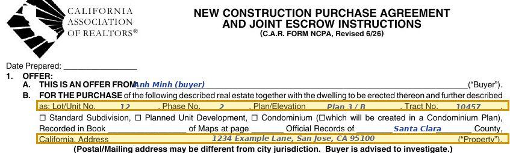
From the actual C.A.R. form. Blue text = example fill-in. Yellow = the part to read. Swipe sideways on a phone.
A new home is described the way the builder’s map describes it: lot number, phase, plan and elevation, tract number, and the recorded map book and page. The street address may be new, and the mail address may show a different city than the one that actually governs the land. The form tells the buyer to check.
Example: Anh Minh (buyer) buys Lot 12, Phase 2, Plan 3 elevation B, Tract 10457, Santa Clara County, address 1234 Example Lane, San Jose, CA 95100. If the sales office says “Plan 3” but the lot map shows a different elevation, fix it before signing.
Different from RPA: the RPA names an existing house by address and APN. Here, the lot + plan is the real description.
Page 1 · ¶1D
Closing date: it floats with construction
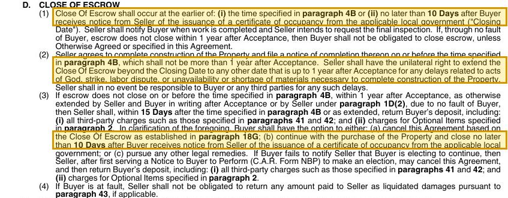
From the actual C.A.R. form. Blue text = example fill-in. Yellow = the part to read. Swipe sideways on a phone.
Escrow closes at the earlier of the date written in ¶4B or 10 days after the builder tells you the city issued the certificate of occupancy. The builder must finish within 1 year of acceptance, but can extend on its own up to 1 year for acts of God, strikes or material shortages, and owes nothing for those delays. If it still is not closed within 1 year and it is not the buyer’s fault, the buyer may cancel and get back the deposit plus third-party charges and upgrade charges within 15 days, or keep going, or use other legal remedies.
Example: acceptance 11/06/2026. The builder emails Anh Minh on 06/14/2027 that the certificate of occupancy was issued. Closing must happen by 06/24/2027. If nothing is finished by 11/06/2027, he is no longer forced to close.
Different from RPA: the RPA has a fixed COE date. Plan rent, rate lock and the sale of your old home with a range, not a date.
Page 1 · ¶2
Options and upgrades: 15 days to choose, and the price goes up
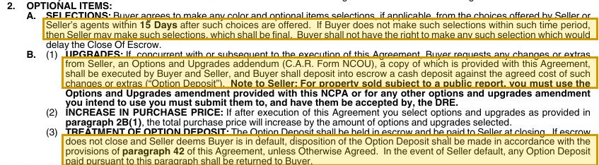
From the actual C.A.R. form. Blue text = example fill-in. Yellow = the part to read. Swipe sideways on a phone.
Once the builder offers color and option choices, the buyer has 15 days to pick. Miss it and the builder picks, and that is final. You cannot choose something that would delay closing. Upgrades are written on the NCOU addendum, and the buyer puts an Option Deposit in escrow. The price goes up by the upgrade amount. The Option Deposit is paid to the builder at closing. If the builder defaults it comes back to you. If you default, it follows ¶42/43.
Example: Anh Minh picks quartz counters and upgraded flooring for $25,000. Price goes from $1,350,000 to $1,375,000. The $25,000 goes into escrow as an Option Deposit.
Different from RPA: there is no selection deadline or upgrade deposit in a resale.
Page 2 · ¶4A–4D
The terms table: price, deposit and the upgrade deposit
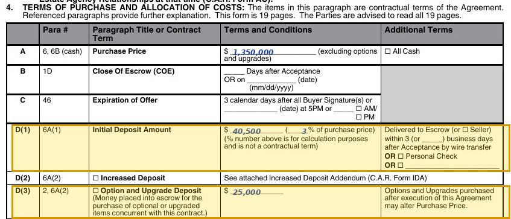
From the actual C.A.R. form. Blue text = example fill-in. Yellow = the part to read. Swipe sideways on a phone.
Row A is the base price, excluding options and upgrades. Row D(1) is the initial deposit, due to escrow (or the builder, if bonded) within 3 business days after acceptance. The percent is only for math, not a contract term. Row D(3) is the Option and Upgrade Deposit for items picked with this contract.
Example: $1,350,000 base price. $40,500 initial deposit = 3%. $25,000 upgrade deposit. Acceptance on Friday 11/06/2026 means the deposit is due Wednesday 11/11/2026? No: 11/11 is Veterans Day, so business day 3 is Thursday 11/12/2026.
Page 3 · ¶4K–4M
Walk-through timing and the contingency list (with the public report)
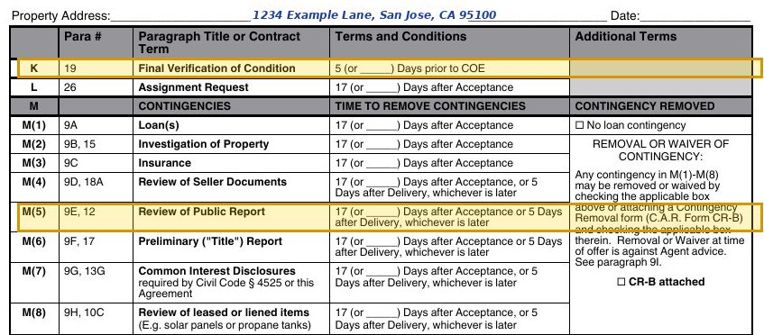
From the actual C.A.R. form. Blue text = example fill-in. Yellow = the part to read. Swipe sideways on a phone.
Row K: the final verification is 5 days before COE. Row M lists every contingency, 17 days by default. Document contingencies run 17 days after acceptance or 5 days after you receive the documents, whichever is later. The new one here is M(5), Review of Public Report: the DRE report about the subdivision.
Example: acceptance 11/06/2026. Day 17 is Monday 11/23/2026. If the builder only delivers the HOA documents on 11/20, that contingency runs to 11/25.
Different from RPA: M(5) Public Report has no twin in the RPA. Removing contingencies with the offer is “against agent advice” in both.
Page 4 · ¶4R, ¶4T, ¶14
Insulation facts and which warranty you get
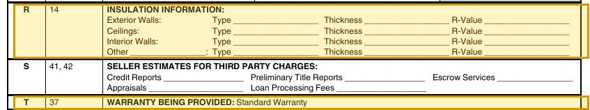
From the actual C.A.R. form. Blue text = example fill-in. Yellow = the part to read. Swipe sideways on a phone.
Federal rules (FTC Home Insulation Rule) make a new-home seller write the insulation type, thickness and R-value for walls and ceilings into every sales contract. Row T says the warranty being provided is the Standard Warranty in ¶37.
Example: Exterior walls: fiberglass batt, 3.5 in, R-15. Ceilings: blown fiberglass, 14 in, R-38. If row R is blank, ask before signing.
Page 4 · ¶6A
Where your deposit goes, and when a builder may hold it
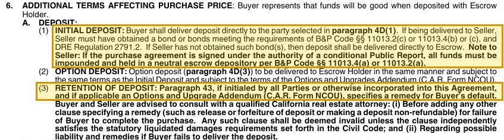
From the actual C.A.R. form. Blue text = example fill-in. Yellow = the part to read. Swipe sideways on a phone.
The deposit goes to the party checked in 4D(1). It can go straight to the builder only if the builder has a bond meeting B&P Code §11013.2(c) or §11013.4(b)/(c) and DRE Regulation 2791.2. No bond, it goes to escrow. If the contract is signed under a Conditional Public Report, all money must sit in a neutral escrow. Any clause that makes a deposit non-refundable must meet the liquidated damages rules, or it is invalid.
Example: the sales office asks Anh Minh to wire $40,500 to the builder’s bank. Before anything moves: ask for proof of the bond, call escrow on a number you looked up yourself, and read the WFA wire fraud advisory in the packet.
Different from RPA: in a resale the deposit always goes to escrow. A builder may legally use deposit money only in the bonded cases.
Page 5 · ¶8B–8C
What the builder promises to build, and the model home trap
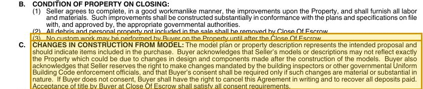
From the actual C.A.R. form. Blue text = example fill-in. Yellow = the part to read. Swipe sideways on a phone.
The builder must finish in a good workmanlike manner, substantially per the plans the city approved, and remove debris. The buyer may not do custom work before closing. The model or plan description shows the intent, but the real home can differ. The builder may make changes inspectors require. Your consent is needed only if a change is material. If you do not consent, you can cancel in writing and get all deposits back. Taking title at closing counts as consent.
Example: the model has a window seat and wood blinds. Anh Minh’s plan sheet does not list them. He does not get them unless they are in the contract or the plan/property description.
Page 6 · ¶9E, ¶12
The DRE public report: what it is and what “conditional” means
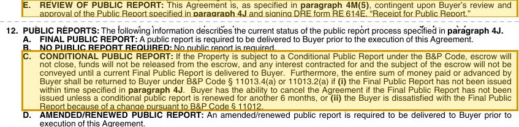
From the actual C.A.R. form. Blue text = example fill-in. Yellow = the part to read. Swipe sideways on a phone.
Most new subdivisions need a DRE public report. You review it and sign DRE form RE 614E, the receipt. Four statuses: Final (must be given before you sign), Not required, Conditional, Amended/Renewed. Under a Conditional report, escrow cannot close and no money is released until the Final report is delivered. If the Final report is not issued in time (6 or 30 months, per the box in 4J), or it changes in a way you do not accept, all your money comes back.
Example: Tract 10457 Phase 2 is selling under a Conditional report. Anh Minh’s deposit stays in escrow. The builder cannot spend it.
Different from RPA: a resale buyer gets a TDS. A sale that must come with a public report is exempt from the TDS (Civil Code §1102.2); the report and the builder’s disclosures take its place.
Page 8 · ¶13J
Prop 65 formaldehyde warning
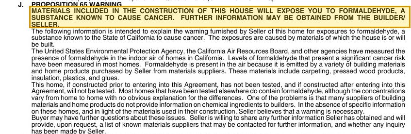
From the actual C.A.R. form. Blue text = example fill-in. Yellow = the part to read. Swipe sideways on a phone.
Every NCPA carries a Prop 65 warning that building materials (carpet, pressed wood, insulation, glues) give off formaldehyde. The home has not been tested and will not be. The builder will share a list of material suppliers on request.
Example: Anh Minh has a newborn. He asks for the supplier list, plans to run the fresh-air system and open windows the first weeks, and can test the air after move-in at his own cost.
Page 8 · ¶15–16
No walking onto the job site
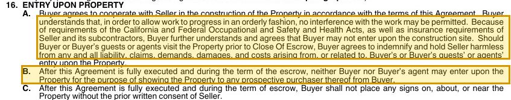
From the actual C.A.R. form. Blue text = example fill-in. Yellow = the part to read. Swipe sideways on a phone.
Because of OSHA rules and insurance, the buyer may not enter the construction site. If the buyer or guests visit anyway, the buyer covers any claims. During escrow the buyer may not show the home to his own buyer or put up signs. ¶15 adds that the investigation contingency “does not include access to the Property.”
Example: Anh Minh wants his own inspector to look before drywall. He asks the builder in writing for a scheduled visit with the superintendent, and gets the date in writing.
Different from RPA: a resale buyer has a right to reasonable access for inspections. Here access is whatever the builder allows, so ask early and in writing.
Page 10 · ¶19
Final walk-through = punch list, not a way out
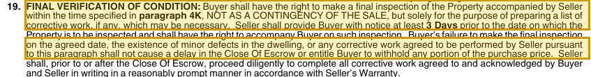
From the actual C.A.R. form. Blue text = example fill-in. Yellow = the part to read. Swipe sideways on a phone.
The buyer can do a final inspection with the builder, at the time in 4K, only to make a list of corrective work. The builder gives at least 3 days’ notice. Skipping the walk, finding minor defects, or agreeing to fixes does not delay closing and does not let the buyer hold back any part of the price. The builder fixes the agreed items before or after closing under its warranty.
Example: 5 days before COE Anh Minh finds a scratched tub and a sticky slider. They go on a signed punch list with a target date. He still closes on time.
Different from RPA: both say the walk is not a contingency. The NCPA spells out that defects cannot delay closing or justify a holdback.
Page 14 · ¶37–38
The builder’s Standard Warranty
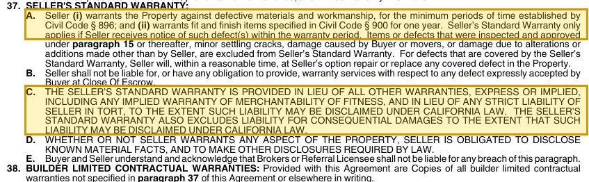
From the actual C.A.R. form. Blue text = example fill-in. Yellow = the part to read. Swipe sideways on a phone.
The builder warrants against defective materials and workmanship for the minimum periods in Civil Code §896 (for example 4 years for plumbing, electrical and hardscape cracks; 5 years for paint and stains; 1 year for irrigation and noise between units) and fit and finish items under §900 for 1 year. You must give notice inside the period. Excluded: items you inspected and approved, minor settling cracks, mover damage, changes not made by the builder. The builder picks repair or replace. This replaces implied warranties where the law allows, but the builder still must disclose known material facts.
Example: month 8, a cabinet door sags. That is fit and finish. Anh Minh emails the builder with photos before month 12.
Different from RPA: a resale seller gives no warranty. Here the warranty is part of the contract and has deadlines.
Pages 14–15 · ¶39–40
SB 800: the steps before any defect lawsuit
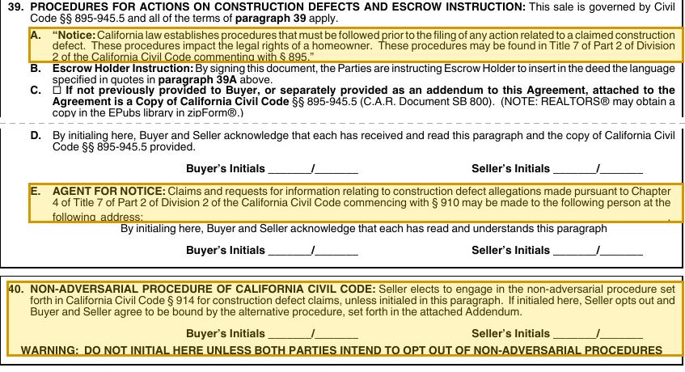
From the actual C.A.R. form. Blue text = example fill-in. Yellow = the part to read. Swipe sideways on a phone.
This sale is governed by Civil Code §§895–945.5 (SB 800). The deed will include a notice about these procedures. ¶39E names the person and address for defect claims. ¶40: the builder uses the non-adversarial procedure of §914 unless both sides initial to opt out into an alternative procedure. In the standard procedure the builder acknowledges a claim within 14 days (§913), inspects, and may offer to repair within 30 days of the inspection (§917). Lawsuits are generally barred 10 years after substantial completion (§941).
Example: year 2, a slab leak shows up. Plumbing has a 4-year period. Anh Minh sends a written claim to the ¶39E address, keeps proof of delivery, and lets the builder inspect.
Different from RPA: none of this exists in a resale. Do not initial ¶40 unless you and your attorney mean to.
Pages 15–16 · ¶42–43
Liquidated damages: the deposit PLUS your upgrade money
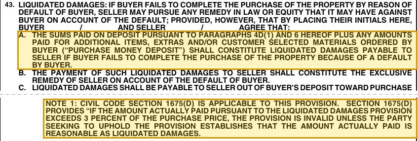
From the actual C.A.R. form. Blue text = example fill-in. Yellow = the part to read. Swipe sideways on a phone.
If both sides initial ¶43 and the buyer defaults, the builder keeps the deposit plus amounts paid for extras and customer-selected materials, as its only remedy. The builder sends a Notice and Demand, served like small claims papers. The buyer has 20 days to object to escrow; if he does, it goes to mediation/arbitration. Note 1: over 3% of the price is invalid unless the builder proves it reasonable (Civil Code §1675(d)). Note 2: for a new condo in a building of 10+ units, §1675(f) adds an accounting and refund rule. ¶42: if the builder spent bonded deposits, it must put that money back in escrow when it claims default.
Example: $40,500 deposit + $25,000 upgrades = $65,500 = 4.85% of $1,350,000. The 3% line is $40,500. Above it, the builder would have to show the amount is reasonable.
Different from RPA: the RPA liquidated damages is the deposit only. Upgrade money makes the NCPA number bigger.
Your NCPA dates and the money at risk
x
$
$
$
x
x
—
x
What people get wrong
“It’s new, so I don’t need an inspection.” New homes have defects too: missing insulation, reversed drains, roof flashing. You have the 17-day investigation contingency, but access is the builder’s call (¶16). Ask in writing for a pre-drywall and a final inspection visit.
“I get what I saw in the model.” You get what the contract and the plan/property description list (¶8C, ¶10). Model furniture, designer lighting and upgrades are not included unless written in.
“If the walk-through finds problems, I can delay closing or hold back money.” Not under ¶19. Minor defects go on a punch list and are fixed under the warranty. Get the list signed with dates.
“I have to use the builder’s lender and escrow.” ¶23 says buyer and seller may choose any providers. Builders often offer incentives for using their lender. That is a trade-off to compare, not a rule.
“The deposit is safe because it’s in escrow.” Usually, yes. But a bonded builder may receive deposits directly (¶6A), and if ¶43 is initialed your upgrade money can be kept too. Know which case you are in.